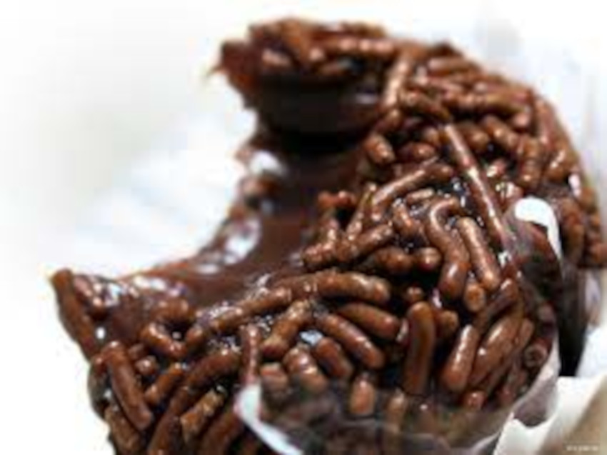

O que vamos precisa
- 1 Lata de leite condensado
- 3 Colheres de noscau
- 1 Culher de mainteiga
Modo de preparo
- Coloque o leite condensado, noscau e a maintega em uma palela.
- Coloque no fogo e mecha tudo até desgrudar do fundo da palela.
- Quando desgrudar coloque em um porte.
- Quando esfriar estara pronto para comer.
- Mecha em fogo baixo, se não ele queima.